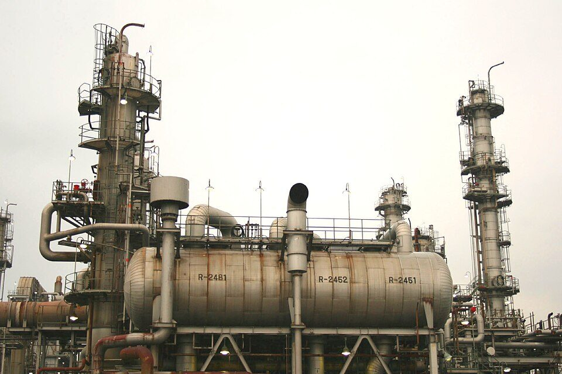
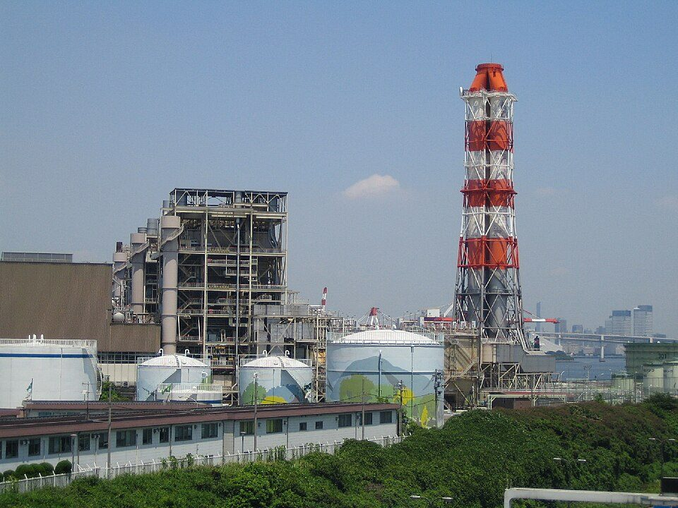
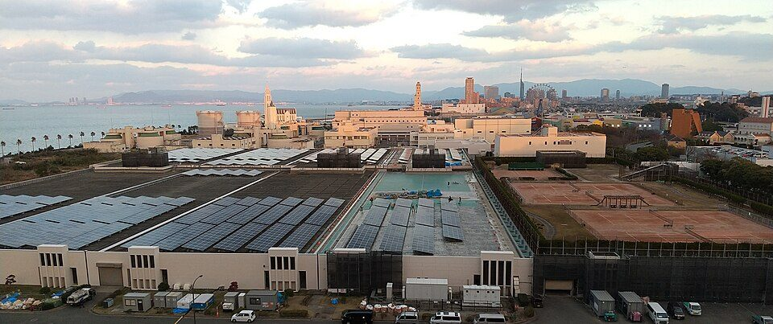
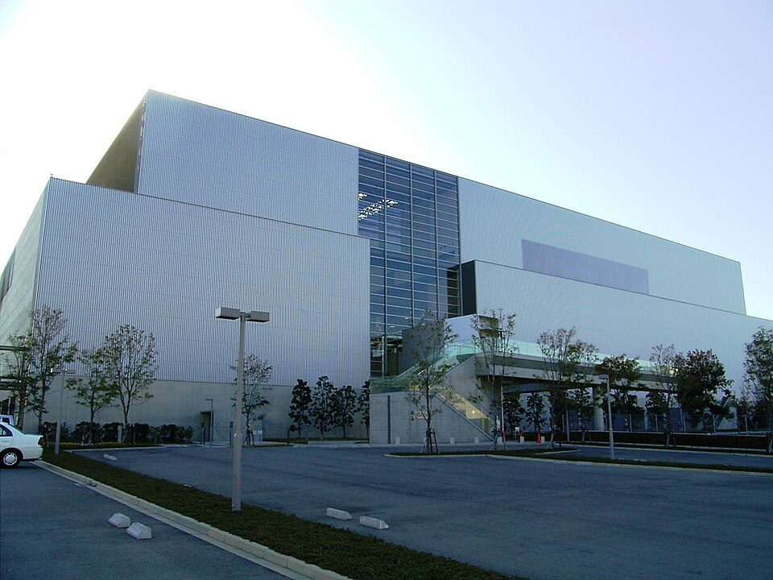

プラントとは何かを分かりやすく解説：工場との違い、種類、中にある設備、プラントの一生、日本のどこにあるか
要点まとめ
ニュースや求人で「プラント」という言葉をよく見かけますが、普通の工場と何が違うのかは分かりにくいかもしれません。この記事では、プラントの意味、種類と日本の数、中にある設備、建ててから廃止するまでの流れ、安全の仕組みを、公的機関と業界団体の資料で入門向けにまとめました。業界と会社の話はプラントエンジニアリングとは、中の仕組みの詳しい話は化学プラントの基本構成と仕組みにまとめています。

「プラント」とは
大きな装置を組み合わせて、原料から製品をつくる設備
法令などで決まった定義は、今回の調査では見つからなかった
辞書は、生産の工程が大規模な装置でできていて自動化されている産業を「装置産業」と説明し、石油精製・石油化学・鉄鋼などを例に挙げています[1]。原料から製品まで何段階もの装置を組み合わせて一貫して生産するので、製鉄所や石油化学コンビナートができるとしています[1]。石油化学工業協会は、原料を高い温度にしたり強い圧力をかけたりするため、化学工場は安全に配慮した大がかりな設備になると説明しています[8]。
くわしく
- エンジニアリング協会は、エネルギー・化学・医薬・食品などの生産設備を対象に挙げている[9]
- 工場のうち、建物よりも装置と配管が主役の設備をプラントと呼ぶことが多いと考えられる（筆者の見解）
プラントの種類と日本の数
| 種類 | 原料→つくるもの | 日本の数・規模 |
|---|---|---|
| 製油所（石油精製） | 原油→ガソリン・灯油・軽油など[10] | 19か所、原油処理能力 合計311万バレル/日（2026年4月末）[2] |
| エチレンプラント（石油化学） | ナフサ→エチレンなどプラスチックの原料[11] | 12基（2025年7月現在）、エチレン能力 年616万トン[3][12] |
| 発電所 | 燃料・水・光など→電気 | 設備容量 合計3億2,365万kW（2025年度の計画の積み上げ）[13] |
| ごみ焼却施設 | ごみ→灰と熱・電気 | 991施設。うち415施設に発電設備（2024年度末）[4] |
| 下水処理場 | 汚水→きれいな水 | 終末処理場 約2,200か所（2022年度末）[14] |
石油や高圧ガスを大量に扱うコンビナートの事業所を、業態ごとに数えたものです（主な業態のみ）[7]。


プラントの中にあるもの
| 分類 | 例 |
|---|---|
| 動かない機器 | 反応器・蒸留塔・タンク・熱交換器・フレア・ボイラーなど[15] |
| 回転する機械 | コンプレッサー・ポンプ・ガスタービンなど[15] |
| 配管 | 機器と機器をつなぐ[15] |
| 計装・制御 | 流量・圧力・温度・液位・成分を測って制御する機器とシステム[15] |
| 建屋 | 機械室・制御室など[15] |
製油所では、原油を蒸留・脱硫・分解・改質する
原油からガソリンだけをつくることはできない
石油連盟によると、製油所の主な工程は「蒸留」「脱硫」「分解」「改質」です[10]。原油を加熱炉で350℃以上に熱して蒸留塔に吹き込み、沸点の違いで大まかに分けた後、脱硫・分解・改質で製品に仕上げます[10]。原油からガソリンだけ、灯油だけをつくることはできず、いろいろな製品が同時にできます[16]。製品は、内航タンカー（1隻1,000〜7,000kL程度）、タンク車、タンクローリーで運ばれます[17]。
コンビナートでは、工場どうしをパイプラインでつなぐ
石油精製→ナフサ分解→製品の工場が隣り合う
石油化学工業協会は、石油化学製品は、それぞれ役割を持った工場をパイプラインでつないだコンビナートでつくられると説明しています[11]。原料を運ぶタンカーが使いやすい太平洋岸や瀬戸内海沿岸の埋め立て地に多くあります[11]。
プラントの一生
高圧ガスを扱うプラントを例に、建てる前から廃止するまでの主な手続きと検査を並べました。
- 計画・設計
事業化の調査、基本設計、詳細設計
- 建てる前
高圧ガスの製造の許可を受ける
- 完成
完成検査を受ける
高圧ガス保安法 第20条[6]
- 試運転
原料を入れ、目指す品質・量の製品ができるか確かめる
- 運転中
定期の自主検査と、保安検査
- 定期修理
プラントを止めて、開放検査や補修をする
- 廃止
製造をやめたら届け出る
高圧ガス保安法 第21条[6]
認定を受けると、自分で検査して長く運転できる
2023年12月に「認定高度保安実施者」の制度が始まった
高圧ガス保安法では、国の認定を受けた事業者は、都道府県知事の保安検査を受ける代わりに自分で保安検査を行えます[6]。高圧ガス保安協会の資料によると、それまでの「スーパー認定」などは、2023年12月21日に「認定高度保安実施者」の制度に移りました[21]。認定の主な利点は、プラントを止めずに長く運転できることです[21]。
くわしく
- 2019年の企業の解説では、連続運転は通常の認定で最長4年、スーパー認定で最長8年[20]
- 新しい制度での連続運転の上限は、今回は確認できなかった
日本のどこにあるか
石油コンビナート等特別防災区域は、全国に76地区
32都道府県96市町村に、特定事業所が632
消防白書によると、2025年4月1日現在、一定量以上の石油や高圧ガスを大量に集めている76地区が石油コンビナート等特別防災区域に指定され、特定事業所は632あります[5]。2021年4月1日には80地区でした[22]。
| 区域 | 特定事業所 |
|---|---|
| 京浜臨海（神奈川県） | 67[7] |
| 京葉臨海中部（千葉県） | 62[7] |
| 名古屋港臨海 | 36[7] |
| 堺泉北臨海 | 33[7] |
| 四日市臨海 | 32[7] |
| 鹿島臨海 | 31[7] |
| 水島臨海 | 24[7] |
エチレンプラントは、鹿島・市原・千葉・川崎・四日市・大阪・水島・周南・大分にあります（2025年7月現在）[3]。製油所で原油処理能力が最も大きいのは、ENEOS水島製油所の1日35万200バレルです[2]。

働く人と安全の仕組み
運転・保全・設計など、多くの職種が関わる
配管・機器・回転機・計装・試運転・メンテナンスなど
日揮グループの採用サイトは、プラントの仕事を、プロセス・配管・機器・回転機・電気・計装制御・土木・建築・調達・建設・試運転・メンテナンスなどの職種に分けています[15]。メンテナンスの仕事は、完成したプラントの機器・設備の保全や診断です[15]。
いくつもの法律を重ねて、災害を防ぐ
消防法・高圧ガス保安法などに、石油コンビナート等災害防止法を重ねる
消防白書は、コンビナートでは消防法・高圧ガス保安法・労働安全衛生法などの規制に加え、配置や防災資機材を定めた石油コンビナート等災害防止法によって、総合的な防災体制ができていると説明しています[23]。石油コンビナート等災害防止法は、特別防災区域の災害から国民の生命・身体・財産を守ることを目的としています[24]。全ての特定事業所（632）に自衛防災組織が置かれています[25]。
2025年の事故は427件。京浜臨海が最も多い
地震によらない一般事故は425件で、過去最多
消防庁によると、2025年の石油コンビナート等特別防災区域の事故は427件で、一般事故は425件と過去最多でした[7]。一般事故が最も多いのは京浜臨海（神奈川県）の93件で、次いで京葉臨海中部（千葉県）の64件です[7]。事故の種類と原因は、化学プラントの基本構成と仕組みにまとめています。
今回確認できなかった点
- 「プラント」の法令・JISでの定義と、工場との違いを説明した公的な資料
- 発電所の種類別の数（資源エネルギー庁の統計を読めなかった）
- 厚生労働省 job tag の、プラントの運転員の就業者数と賃金（自動では取得できなかった）
- 新しい認定制度での、連続運転の上限の年数
- LNG基地の数、プラントの廃止の件数
出典（25件）
閲覧日はいずれも2026年11月10日
- 装置産業（コトバンク（デジタル大辞泉・世界大百科事典））
- 製油所の所在地と原油処理能力（2026年4月末現在）（石油連盟）
- 石油化学コンビナート所在地およびエチレンプラント生産能力（石油化学工業協会）
- 一般廃棄物の排出及び処理状況等（令和6年度）について（2026年3月27日）（環境省）
- 令和7年版 消防白書「特別防災区域の現況」（総務省消防庁）
- 高圧ガス保安法（e-Gov法令検索）
- 令和7年中の石油コンビナート等特別防災区域の特定事業所における事故概要（2026年5月29日）（総務省消防庁）
- Let's Study 石油化学「石油化学工業とは？」（石油化学工業協会）
- エンジニアリング協会とは（エンジニアリング協会）
- よくある質問「製油所の精製工程」（石油連盟）
- Let's Study 石油化学「石油化学製品はこうしてつくる」（石油化学工業協会）
- 日本の石油化学製品の生産能力（石油化学工業協会）
- 2026年度供給計画の取りまとめ（2026年3月）（電力広域的運営推進機関）
- 国土交通白書2025「下水道整備の推進による快適な生活の実現」（国土交通省）
- 新卒採用 日揮グループの職種（日揮ホールディングス）
- よくある質問「連産品とは」（石油連盟）
- よくある質問「石油のサプライチェーン」（石油連盟）
- 消防法（e-Gov法令検索）
- 主要石油化学製品のメーカー別生産能力（石油化学工業協会）
- JXTG Technical Review「高圧ガス保安法 国内初のスーパー認定取得」（2019年）（ENEOS（旧JXTG））
- 自主保安高度化事業者の概要について（高圧ガス保安協会（三重県のサイトに掲載））
- 令和3年版 消防白書「特別防災区域の現況」（総務省消防庁）
- 令和7年版 消防白書「石油コンビナート災害対策の現況」（総務省消防庁）
- 石油コンビナート等災害防止法（e-Gov法令検索）
- 令和7年版 消防白書「特定事業所における防災体制」（総務省消防庁）
写真・画像の出典（4件）
- 工業地帯の化学プラント
写真: ccfarmer／Wikimedia Commons（CC BY 3.0） - 火力発電所（東京都品川区）
写真: Itoshin87 at Japanese Wikipedia／Wikimedia Commons（パブリックドメイン） - 下水処理場（福岡市）
写真: Hirho／Wikimedia Commons（CC BY-SA 4.0） - ごみ焼却工場（広島市中工場）
写真: Taisyo／Wikimedia Commons（CC BY-SA 3.0）